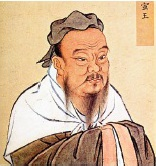

Daha ziyade Konfüçyüs olarak bilinen K’ung Fu Tzu, MÖ 551 - 479 arasında yaşadı. Felsefesi, tanrı eksenli bir din olmayan bir yaşam biçimi olarak görüldüğünden, bazı Doğu Asya kültürlerinin bütünleyici bir parçasıdır.

Konfüçyüs, Tao’nun evrenin temelini oluşturan güç olduğuna inandı. Tao, dünyanın sabrettiği sonsuz değişimlerin kaynağı olan ‘yin ve yang’ın zıt ama bütünleyici güçlerini meydana getirir.
Konfüçyüs’ün hedefi, bu sürekli değişime dayanabilecek uyumlu bir toplum yaratmaktı. İnsanlar doğuştan iyi olmalarına rağmen, dağınık toplumların yanı sıra aydınlanmamış olanların kötünün var olmasına neden olduğuna inandı.
Konfüçyüs, her bir kişinin dünyada kendi yerine sahip olduğuna ve böyle yetiştirilebilen bireylerle toplumu ilerletebileceğine inandı. Kişinin evlat hürmetiyle işe başlaması gerektiğini söyledi. Tam kalbindeki bu kavram, evladı babasını ve atalarını gururlandırmaya davet eder.
Evlat hürmetinde Konfüçyüs, tüm topluma model olması gerektiğine inandığı, her biri bir üstün bir düşük eşe sahip olan beş ilişkiyi ortaya koydu. İlki ve en önemlisi, baba ve oğul arasındaki ilişkiydi. Bunu, yönetici-yönetilen, karı-koca, büyük kardeş-küçük kardeş ve arkadaş-arkadaş ilişkileri izler. Eğer bu ilişkiler düzgün bir şekilde yerine getirilirse – yani, düşük konumda olan her zaman üstüne saygı duyarsa – Konfüçyüs, toplumun antik çağ kralları tarafından bir zamanlar başarıldığı gibi uyumlu bir devlete ulaşabileceğine inandı.
Konfüçyüs’ün öğretileri, büyük oranda Konfüçyüs Yazmaları’ndan alındı. Ancak orijinal öğretilerinin çoğu bilinememektedir, çünkü Qin hanedanlığı (MÖ221-207), Konfüçyüs öğretilerine karşı bir baskılama kampanyası başlattı. Bugün var olan Konfüçyusçuluk’un çoğu, aslında hem Taocu hem de Budist düşünceden etkilenen yeni Konfüçyusçuluk’tur.
EK BİLGİLER:
1. Konfüçyus’un beş ilişkisi, tarihsel olarak Çin hukuk sistemine dâhil edilmiştir. Eğer bir suç, ilişkilerden birinin kutsiyetini ihlal ettiyse – örneğin babasından çalan bir oğul – ceza arttırılır.
2. Konfüçyus, liderlerin zekaları ve becerileri için seçilmesi gerektiğini öğretti. Bu da dünyadaki ilk memur sınav sisteminin Çin’de, MÖ 165 yılında yürürlüğe konmasını sağladı.